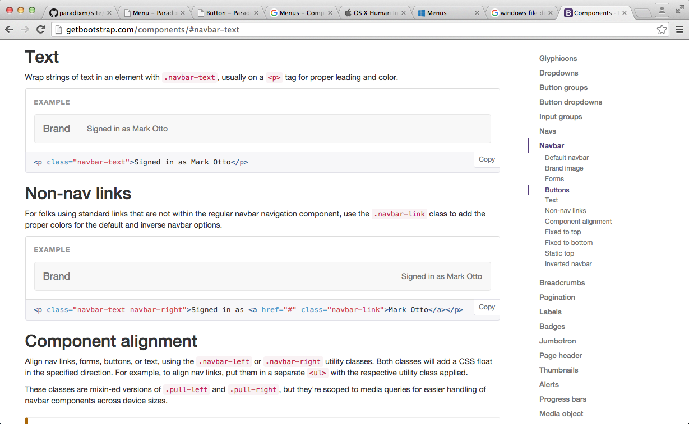

Appearance
Menus have been the go-to method for displaying (and hiding) lists of items and buttons for decades.
[Place a photos of menus here. One for mac, one for pc]
And like these examples, they tend to follow the standard form of having items listed from top to bottom with anywhere from 1 to around 25 items to choose from.
Of course, these items can often be menus themselves within other menus.

Placement
Menus are usually located on the "edges" of graphical interfaces. For example, the Mac OS X graphical interface provides menus at the top of the Desktop screen that are always available, yet out of the way from high-activity portions of the screen.
[Photo of Mac menus] [Photo of PC menus]
This pattern seems to extend to application or browser windows as well.

There are also menus that remain hidden unless invoked by the user, such as the menu that appears when a user right-clicks (or ctrl + click in the case of Mac OS X).
[Photos of mac and pc right-clicks]
Key Characteristics and Best Practices
The following attributes for menus across platforms have allowed much more choice and accessibility to be included in a single page (or single interface), as opposed to requiring users to constantly switch to different windows or screens each time they need to access a new list of items to choose from.
Behavior and Feedback
On most platforms, menus are usually accessed by first clicking on a button.The menus then expand to reveal the items they hold. On most platforms, users are also able to hover over to a different menu button and, without clicking, expand those other menus as well after having already clicked on one. This includes menu buttons within the menu itself.
To exit a menu on most platforms, the user can click outside of the open menu to close it. The menu also usually disappears when the user selects one of its items.
When an item is selected, the menu indicates this action with a flashing highlight. Though, this usually happens so fast that the user's eyes have likely moved to the newly opened menu or window triggered from the button rather than notice the menu's indication.
As for most components on a graphical interface, feedback to the user is a crucial aspect, specifically for when the user is attempting to perceive the system state and evaluate its outcomes (as outlined by Don Norman's Stages-of-Action Model). Menus usually do have indicators, such as grayed out, unclickable items, to indicate which state the menu is in.
Labeling
Google recommends that menu labeling should be contextualized so that users can generally know what a menu contains before they open it. This way users don't have to spend extra time exploring after having clicked on a menu with the wrong content. Apple adds to these contraints by saying that labels should be as short as possible without sacrificing clarity, and also suggest that icons should not be used as menu labels (nor should a mix of labels and icons) because users can confuse them with "menu bar extra."
Placement
Google recommends that when it comes to behaviors like expanding, menus should appear on top of the elements they are emitting from so as to not remove it from its context.
Priority Metrics
The five usability metrics outlined by Jakob Nielsen in his book, Usability Engineering (page 26), are of critical importance to menu components on interfaces. For example, we can imagine how much less effective software development in general would be had these metrics not been taken into account in the design of file Directories, which are crucial representations of menus that allow users to organize and structure data.
A majority of menu components represent a list that someone might draw on paper with items to keep track of or investigate. These specific representations, in this respect, are highly learnable for, say, some who has never used a computer before. It is in fact important that users are not hindered by a complex arrangement of items (Learnability). And given that menus are so common (and crucial to the organization of a graphic interface), it is important that users can quickly learn when, where, and how to access them so that there won't be too much time spent simply trying to locate items or functions in an application (Efficiency).
Current menu designs are extremely memorable as well because they are organized as they would be on paper, such as the table of contents at the beginning of a book (Memorability). Also, it is probably best that menus be fairly simple to access and use and have adequate feedback features for users to reduce the number of errors with using them (Errors).
State Diagram
A state diagram indicating the actions and states of a user interface component.
This is most likely an image. Bonus props if you use SVG.
And also, a state diagram implies, well, states. So be sure to describe them. Note also that there will usually be overlap between a component’s events and its state diagram. A sufficiently detailed state diagram, however, may have more activities than the “public” events that can be reported by a component.
Most button designs have the following states. The enabled and disabled states can be
viewed as “dormant” button states—they are the only states that a button can have when a user is not interacting with
it. The enabled state means that a user can interact with it, while the disabled
state means that a user cannot do so.
When a button is enabled, additional states may be triggered. Not all states are present in all button
implementations, but in general they are:
hover: For platforms with an explicit pointing element, positioning that element over a button may change the button’s appearance. This provides a form of feedback that states that the button will respond if additional activity is performed.armed: If the user initiates button-triggered behavior, such as a click on mouse-capable systems, the button may enter a state indicating that it is ready to be invoked. Many button implementations allow an “out” from this state, in case the user changes his or her mind in mid-action.
Events
An event is something that can happen to a user interface component. They are both conceptual and highly concrete in that events very frequently translate directly into a user interface component’s API.
Component in Action
Embedded or linked video (by you or by others [and if by others give credit]) showing the component in action.
For components that are available on a web platform, you can embed an actual component right here, such as:
Variants
Accordion Menus
Accordion menus such the two featured below are emerging as a cool new menu trend on webpages or applications (especially those for mobile apps).
They allow users to access lists of items without expanding the menu into a different column on the screen or on top of other information that users are looking at.
Directories
Directories may not be a "common" variant of menus per se (as in plurality), but they may in fact be the most vital graphic interface "menu" because of how they are designed to organize and access files. It is for these reasons that directories involve slightly more complex operations such as sorting, expanding/collapsing folder trees, displaying file information, and so on.

Bootstrap's Menu
The Bootstrap website has what seems to be a hybrid of an accordion menu with a scroll bar on the side. It has the general categorical items with their corresponding subitems as well as two scroll bars, one large and one small, to indicate where the user to navigating on the menu and the page. The larger bar indicates the overall category the view is in, while the smaller bar indicates what is currently being viewed in the window itself.
[More text here]
- Menu items are very close to buttons in behavior—they perform individual action elements upon simple invocation by a user. However, they belong to a broader context/structure of a menu, and look sufficiently different that they are both conceptually and programmatically viewed as distinct from buttons.
- Italicized words! (and some more words)